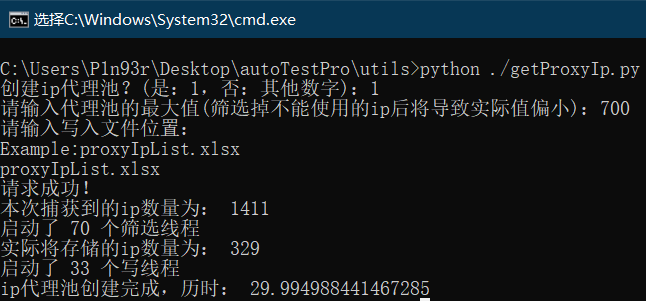
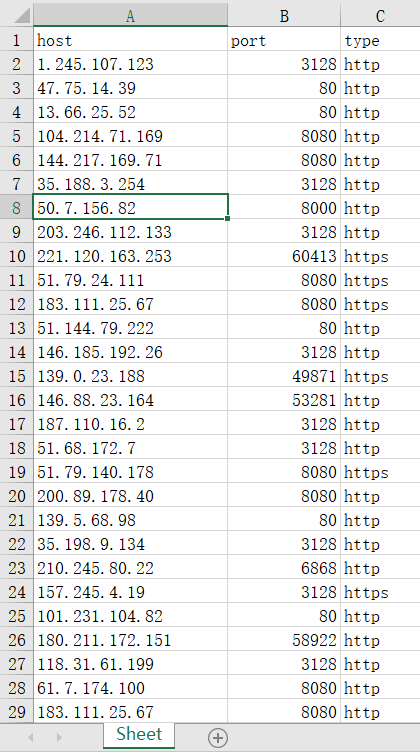

高效创建ip代理池

文章目录
前言
这次自动化软件测试课设过程中，弄着弄着ip就被ban了，于是想到挂代理，然后就想自己创建一个ip代理池，最后在github上发现了一个开源项目：proxylist ，此项目作者自己每隔15分钟将自己爬到的代理ip发布到此项目的proxy.list下，所以我们直接获取这个文件就行了。以下的所有操作都是基于这个项目的。感谢作者提供的便利！
然后我用的是python3解析获取到的proxy.list，将里面的代理ip存放到一个excel文件里， 使用了openpyxl模块 ，需要pip安装一下。然后所谓的高效，就是用了多线程而已=-= ，多线程筛选可用的ip，并且多线程写入excel，最后汇总到一个excel。
Show you the code
1 2 3 4 5 6 7 8 9 10 11 12 13 14 15 16 17 18 19 20 21 22 23 24 25 26 27 28 29 30 31 32 33 34 35 36 37 38 39 40 41 42 43 44 45 46 47 48 49 50 51 52 53 54 55 56 57 58 59 60 61 62 63 64 65 66 67 68 69 70 71 72 73 74 75 76 77 78 79 80 81 82 83 84 85 86 87 88 89 90 91 92 93 94 95 96 97 98 99 100 101 102 103 104 105 106 107 108 109 110 111 112 113 114 115 116 117 118 119 120 121 122 123 124 125 126 127 128 129 130 131 132 133 134 135 136 137 138 139 140 141 142 143 144 145 146 147 148 149 150 151 152 153 154 155 156 157 158 159 160 161 162 163 164 |
import json
import requests
import threading
import time
import os
import shutil
import openpyxl
from openpyxl import Workbook
#写文件的多线程类
class WriteIpList(threading.Thread):
def __init__(self,location,list,start):
super(WriteIpList,self).__init__()
self.location=location
self.list=list
self.startLocation=start
def run(self):
currentLocation=self.startLocation
wb = openpyxl.Workbook()
ws = wb.active
ws.append(["host","port","type"])
for index in range(len(self.list)):
proxyJson = json.loads(self.list[index])
host = proxyJson['host']
port = proxyJson['port']
type = proxyJson['type']
temp=[host,port,type]
#将得到的ip数据添加到excel的一行
ws.append(temp)
# 判断路径是否存在
isExists=os.path.exists("./temp")
if not isExists:
os.mkdir("./temp")
#保存当前excel
wb.save("temp/temp_"+str(self.startLocation)+'.xlsx')
#筛选ip的多线程类
class SelectIp(threading.Thread):
def __init__(self,list,targetList):
super(SelectIp,self).__init__()
self.list=list
self.targetList=targetList
def run(self):
for i in range(len(self.list)):
#验证当前ip是否可用(虽然可以设置代理，但是不保证可以隐匿)
proxyJson = json.loads(self.list[i])
proxy = {
"http":proxyJson['host']+":"+str(proxyJson['port']),
}
try:
proxyResp = requests.get('http://icanhazip.com',proxies=proxy,timeout=3)
if proxyResp.text.strip()==proxyJson['host']:
self.targetList.append(self.list[i])
except Exception as e:
#使用此代理ip不能联网或者网速过慢，所以舍弃
continue
def getIpList(count):
while(True):
try:
#待提取ip文本地址
proxyUrl = 'https://raw.githubusercontent.com/fate0/proxylist/master/proxy.list'
response = requests.get(proxyUrl,timeout=5)
proxiesList = response.text.split('\n')[:-1]
totalCount=len(proxiesList)
if count>totalCount:
count=totalCount
print("请求成功！\n本次捕获到的ip数量为：",totalCount)
#返回ip列表
return proxiesList[:count]
except Exception as e:
print("本次请求ip代理池失败，正在进行下次请求......")
continue;
def endWrite(location):
xlfs=[str("./temp/")+x for x in os.listdir('./temp/') if os.path.isfile(str("./temp/")+x) and os.path.splitext(str("./temp/")+x)[1] == '.xlsx']
count=len(xlfs)
if count!=0:
#一个存放结果的列表
result=[]
#复制每个表的数据（除去表头）
for each in range(count):
wb=openpyxl.load_workbook(xlfs[each])
ws=wb.active
#获取总行数和总列数
rows=ws.max_row
columns=ws.max_column
for i in range(2,rows+1):
rowValue=[]
for j in range(1,columns+1):
rowValue.append(ws.cell(row=i, column=j).value)
result.append(rowValue)
#创建一张汇总的新表
wb = openpyxl.Workbook()
ws = wb.active
ws.append(["host","port","type"])
for each in range(len(result)):
ws.append(result[each])
wb.save(location)
#汇总之后，删除temp文件夹
shutil.rmtree('./temp')
def startWrite(count,location):
'''
Function:将ip池写道指定的excel文件下，count为期望的ip池大小，location是指定excel文件的位置（带后缀）
'''
try:
#开始时间
start=time.time()
originalIpList=getIpList(count)
#存放结果的list
resultList=[]
#线程池
selectIpThread=[]
#启动筛选线程
selectThreadCount=(len(originalIpList)+9)//10
print("启动了",selectThreadCount,"个筛选线程")
for i in range(selectThreadCount):
t=SelectIp(originalIpList[i*10:i*10+10],resultList)
t.start()
#将启动的线程加入线程池
selectIpThread.append(t)
#等待线程完成
for i in range(0,len(selectIpThread)):
selectIpThread[i].join()
#得到筛选后的ip列表
finalIpList=resultList
totalCount=len(finalIpList)
print("实际将存储的ip数量为：",totalCount)
#分配线程策略：一个线程写10行
threadCount=(totalCount+9)//10
print("启动了",threadCount,"个写线程")
#创建线程池
thread=[]
for i in range(0,threadCount):
targetList=finalIpList[i*10:i*10+10]
t=WriteIpList(location,targetList,i*10)
t.start()
#将启动的线程加入线程池
thread.append(t)
#等待线程完成
for i in range(0,len(thread)):
thread[i].join()
end=time.time()
endWrite(location)
print("ip代理池创建完成，历时：",end-start)
except Exception as e:
print(e)
if __name__=="__main__":
try:
updateIps=input("创建ip代理池？(是：1，否：其他数字)：")
if int(updateIps)==1:
count=input("请输入代理池的最大值(筛选掉不能使用的ip后将导致实际值偏小)：")
location=input("请输入写入文件位置：\nExample:proxyIpList.xlsx\n")
count=int(count)
startWrite(count,location)
except Exception as e:
print("请合法输入！\n\n") |
演示
运行演示如图所示：

打开脚本生成的excel结果如图所示(未显示完全)：

文章作者 P1n93r
上次更新 2019-10-04